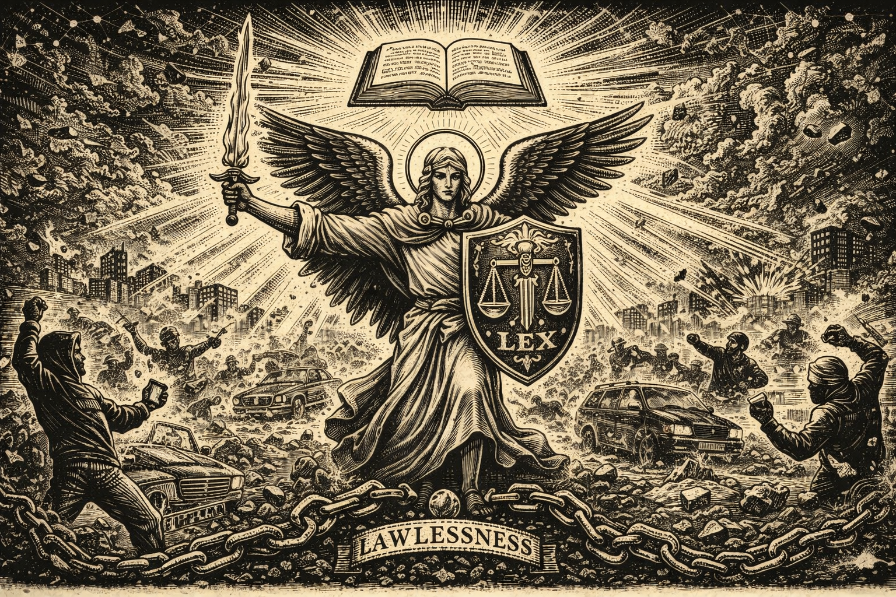

Edition: January 11, 2026
Opening Dispatch
Patriots, behold the hour! As 2026 unfolds, the republic quakes
under the weight of lawlessness unleashed. Tens of thousands flood
Minneapolis streets in raging protests over the fatal ICE shooting
of activist Renee Good—chanting "Abolish ICE," hurling ice and
rocks, blocking roads in defiance of order. Nationwide, over 1,000
rallies erupt against deportations, from Portland to Columbus, with
violence flaring: protesters clashing with officers, vehicles
ramming threats, death threats skyrocketing. DHS reports assaults on
ICE agents up 1,300%, vehicular attacks 3,200%, death threats
8,000%—a direct fruit of radical rhetoric from sanctuary politicians
and cultural scorn for God's appointed sword-bearers.
This is no mere unrest; it's rebellion against divine order. "He
beareth not the sword in vain" (Romans 13:4). The wicked mock
authority, glorify chaos, and invite judgment, while the complacent
slumber. Yet hope stirs: citizen truth-tellers rise on new
frontiers, dismantling legacy media's lies; grit of the founders
endures at our 250th milestone. We anger the wicked by naming their
rebellion, awaken the sleeping with prophetic thunder, equip the
faithful with self-reliance, and point to Christ—the Prince of Peace
who submits yet triumphs over lawlessness.
Strip to roots: limited government, rule of law, biblical
morality—all under assault. Borders mocked, heritage eroded,
families threatened by imported disorder. But God stirs revival amid
shadows. Rise, watchmen! The cry goes forth: restore order, reclaim
sovereignty, or face the furnace of consequences. Common sense
reborn demands vigilance now.

The Plain Truth: America at 250 – The Grit That Built Us Will Build
Tomorrow
By The Working Patriot

Brother, sister—pull up a chair. It's 2026, and this nation of ours
is turning 250 years old. Think on that. In 1776, ordinary
folks—blacksmiths, farmers, millers, men and women with dirt under
their nails—stood up and said enough to tyranny. They risked
everything on a simple truth: that liberty comes from God, not
governments, and that the common man, through hard work and
perseverance, can govern himself.
We've proven it time and again. From scratching out homesteads on
raw frontier to forging steel that won wars and built skyscrapers
that scrape the heavens. We fed the world from our fields, lit the
dark with our inventions, and sent rockets to the moon on the sweat
of shift workers and engineers who clocked in every dawn. It wasn't
handouts or shortcuts—it was callused hands, long hours, and the
stubborn refusal to quit. That's the American character:
perseverance when the crop fails, the factory closes, or the bills
stack high. We answer to our families, our communities, and our God,
not to distant bureaucrats.
Sure, we've got our divisions—red states, blue states, loud
arguments across kitchen tables. But strip it all away, and you'll
find the same abundance underneath: that rock-solid work ethic
running through every American vein. The welder in Ohio and the
rancher in Texas, the nurse in California and the trucker in
Pennsylvania—they all know sunrise means roll out of bed, provide
for your own, and leave the place better for your kids. That's not
politics; that's who we are.
And that's why my heart stirs with real hope as we hit this
milestone. Caution, yes—we've got debts to pay down, borders to
secure, and moral drift to correct. But the possibilities? Endless,
if we lean on what got us here. Hard work and perseverance built
this republic, and they'll rebuild it stronger. Imagine our children
inheriting factories humming again, communities tight-knit and
self-reliant, opportunities flowing from honest labor—not government
schemes, but American grit turned loose.
So here's the quiet rally cry, from one working man to another: Roll
up your sleeves once more. Teach your boys and girls that nothing
worthwhile comes easy, but anything is possible with faith and
sweat. Build that business, fix that neighborhood, stand for what's
right. For their sake—for the grandkids who'll run these fields and
factories—let's pass on an America even greater than the one handed
to us.
Point to Christ, who worked with His hands and never quit the
mission. Common sense reborn: our best days aren't behind us.
They're waiting on the other side of tomorrow's hard work. Let's go
get 'em.
Prophetic Parallels: Lawlessness Unleashed – Scorn for the
Sword-Bearers and the Peril Ahead
By The Old Prophet

In these opening days of 2026, gaze upon the deepening shadows over
the land. A spirit of lawlessness rises like a flood, manifesting in
brazen contempt for those divinely appointed to wield the sword of
justice—our law enforcement officers, the sentinels of order and
peace. Official reports confirm the grim reality: assaults on U.S.
Immigration and Customs Enforcement (ICE) officers have surged more
than 1,300%, with vehicular attacks skyrocketing over 3,200% and
death threats escalating a staggering 8,000%. Ambush-style
premeditated assaults on law enforcement reached 67 in 2025 alone,
wounding scores and claiming lives through calculated malice. A
Florida deputy, ambushed and shot point-blank in the face, has only
recently been released from the hospital—a miracle amid the mounting
toll. Radical rhetoric from sanctuary strongholds and cultural scorn
embolden the lawless, turning routine duties into deadly traps.
These are not isolated tragedies; they echo ancient warnings etched
in Holy Writ. Romans 13:3-4 proclaims: "For rulers are not a terror
to good works, but to evil... He is God's minister to you for good.
But if you do evil, be afraid; for he does not bear the sword in
vain." To revile and assault the protector is to rebel against God's
ordinance, unleashing chaos upon society. Recall the days of the
Judges, when "there was no king in Israel; every man did that which
was right in his own eyes" (Judges 21:25)—a time of anarchy,
oppression, and vulnerability to foes. So now: when authority is
mocked, justice hampered, and protectors ambushed, we mirror that
descent, forsaking the fear of the Lord wherein true safety lies
(Proverbs 14:26).
Deeper still run the prophetic parallels. As in Isaiah's lament over
a rebellious people who "call evil good and good evil" (Isaiah
5:20), we pervert order by demonizing guardians while excusing
disorder. Israel scorned the watchmen God raised until judgment
came—armies at the gates, captivity, desolation (Hosea 4:6-7).
Persist in this scorn, and what awaits? Intensified turmoil: streets
surrendered to violence, communities fractured, a nation exposed to
internal rot and external threats. The Lord removes His protection
when obedience fades, permitting the fruits of rebellion to chasten
us.
Yet, glory to God—mercy endures! The call rings clear: "If My people
who are called by my name will humble themselves, and pray and seek
My face, and turn from their wicked ways; then I will hear from
heaven, and forgive their sin, and heal their land" (2 Chronicles
7:14). For the obedient and faithful, blessings overflow: divine
safeguard over homes and streets, strength for families rooted in
righteousness, restoration of order under godly authority
(Deuteronomy 28:1-14). Honor the sword-bearers as God's ministers;
pray fervently for their protection; uphold justice without
partiality.
Point to Christ, the Prince of Peace who submitted to authority yet
triumphed over lawlessness. Repentance revives; faithfulness invites
heaven's favor. Heed now, lest the shadows engulf us entirely.
Victory Reports: Legacy Media's Crumbling Monopoly – Citizen
Truth-Tellers Rise on the New Frontier
By The Frontier Builder
Amid the storm of lawlessness and protest, victory dawns on the
information battlefield! Legacy media—CNN, MSNBC, The New York
Times—once monopolized "truth," but in 2026, their empire cracks
under the weight of exposed lies. Trust polls hit rock bottom;
ratings crater as Americans reject propaganda mills that buried
scandals, pivoted on COVID origins without apology, and downplayed
fraud while amplifying edited clips to demonize ICE and border
enforcement.
But behold the triumph: citizen journalists on X, Rumble, and
Substack iterate faster, verify harder, reach millions unfiltered.
Lone posters geolocate empty "daycares" in fraud rings, viral
threads dismantle narratives with receipts, millions fact-check in
real time. Elon Musk's open-source platform demolishes walls—garage
sleuths, trucker podcasters, heartland investigators lead the
charge. This is free enterprise reborn: self-reliant patriots
building parallel systems, innovating around censorship like
pioneers routing blockades.
Wins abound: Media Bias Tracker catalogs lies weekly; boycotts
starve the beast; open platforms empower truth over agenda. The
guilty scorched—retracted stories pile high, coordination leaks
expose coordination. Parallel media ecosystem tips toward dominance:
one major exposure, and the old guard collapses.
Rejoice! "The truth shall make you free" (John 8:32). Citizen
truth-tellers rise—equipping the faithful, angering the wicked,
pointing to Christ who is Truth incarnate. The new frontier belongs
to the vigilant; liberty flourishes where facts win.
The Common Man's Counsel
Reader Question: "With riots raging and lawlessness everywhere, how
does a working family man protect his home and loved ones without
fear?" – Submitted by T.R., Wichita Truck Driver
Brother T.R., your question strikes the heart of every patriot in
these perilous days. Riots in Minneapolis, assaults on officers
surging, vehicles weaponized—lawlessness floods the streets like a
biblical plague. But fear not; Scripture equips: "The Lord is my
light and my salvation; whom shall I fear?" (Psalm 27:1). Personal
responsibility and self-reliance are our armor.
First, fortify your homestead: Install sturdy locks, motion lights,
security cameras—simple deterrents that honor prudence. Build
community: Form neighborhood watches with like-minded believers;
mutual aid groups share resources, watch one another's backs. "Two
are better than one... if they fall, the one will lift up his
fellow" (Eccl. 4:9-10).
Spiritually shield your family: Daily Scripture, prayer, teach
children biblical morality—strong families resist decay. Avoid hot
zones; stay informed via citizen sources, not legacy liars. Prepare
practically: Stock food, water, first aid; learn basic self-defense,
firearms if lawful—defend life as God-given.
Action: Vote midterms to restore rule of law; expose local
agitators; pray for officers as God's ministers (Rom. 13). You're no
victim—you're a sentinel. Stand firm in faith, provide boldly,
answer to God alone. Christ conquers chaos; victory is yours through
Him.
Practical Self-Reliance Corner: The Art of Steady Aims – Goals That
Stick Like Glue
By The Frontier Builder
Luke 14:28-30 — "For which of you, desiring to
build a tower, does not first sit down and count the cost, whether
he has enough to complete it? Otherwise, when he has laid a
foundation and is not able to finish, all who see it begin to mock
him, saying, 'This man began to build and was not able to finish.'"
My good friend, in this busy age of 2026, many a man sets his sights
on grand ventures—shedding the spare tire, launching a trade on the
side, or clearing debts that weigh like lead—only to find them
vanished come spring. 'Tis a common folly, but one easily mended
with plain ingenuity and a dash of stubborn grit. The secret to
goals you truly pursue? Craft them not as lofty castles in the air,
but as sturdy machines: built piece by piece, tested in the field,
and tweaked till they roar.
First, anchor thy aim in solid ground. Ask thyself: Why this
pursuit? Doth it fortify thy family, honor thy Maker's call to
stewardship, or secure thy independence against fickle winds? A goal
without a firm "why" is like a rocket without fuel—spectacular
launch, inevitable crash. (And trust me, I've seen enough explosions
to know: better to iterate on the pad than mid-flight.)
Next, divide the labor into short campaigns—no vague vows of "more
exercise," but pledges like "three brisk walks a week, marking
progress in a simple ledger." Run it for a month, measure the yield,
then refine. Miss the mark? Diagnose the fault calmly—too ambitious?
Life's interruptions?—and adjust the design. As old Ben might say,
"He that can have patience can have what he will," but with a modern
twist: patience plus rapid prototyping beats blind perseverance
every time.
Build checks against sloth: Share thy ledger with a trusted
companion or kin—nothing spurs a man like a friendly wager or
watchful eye. Reward steady progress plainly—a hearty meal earned,
not promised in vain.
Then, link new habits to old reliables. Crave sharper wits through
reading? Tie twenty pages to thy morning brew. 'Tis the compound
interest of discipline: small daily investments grow mighty, without
upheaval.
Setbacks? Laugh at them—they're mere data points. One failed sprint?
"Well, that didn't work—back to the drawing board." Humor in the
grind keeps the fire lit; after all, if building rockets to Mars
taught anything, it's that most explode on the way, but the ones
that land change everything.
Fellow traveler, this method turns wishes into works. In times of
uncertainty, such self-mastery is thy greatest tool—providing bolder
for thine own, leading with quiet strength. Begin modestly today:
Choose one aim, sketch its parts, launch the trial. Persevere with
wit and wisdom, and watch thy fortunes multiply.
Prayer of the Week & Closing Call
Prayer: Almighty God, who appoints rulers and
ministers for good, protect our sword-bearers from lawless assaults.
Expose rebellion, humble the wicked, revive obedience in Your
people. Grant wisdom to leaders, grit to families, truth to
truth-tellers. Heal our land through repentance; point us to Christ,
Conqueror of chaos. In Jesus' name, Amen.
Call to Action: Share this cry! Fortify your home,
pray for officers, build community, vote to restore order. Stand as
watchmen—America's destiny demands it. The hour is late; the victory
is Christ's.